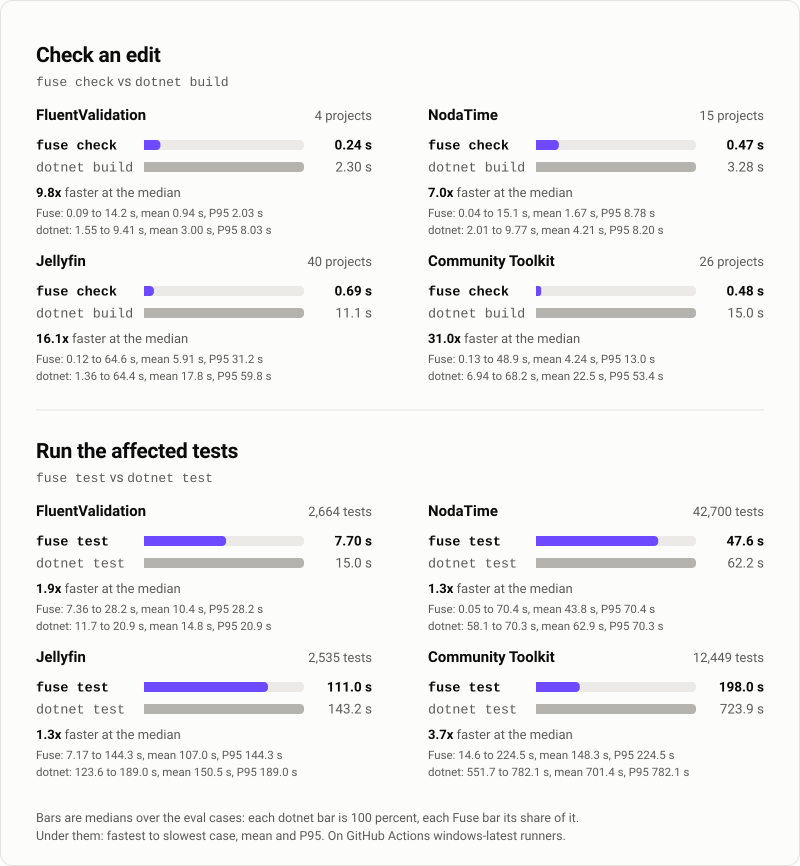

Docs / Understand
Results
On four repositories, Fuse checked an edit 2.9x to 7.4x faster than dotnet build and ran the affected tests 1.4x to 5.7x faster than dotnet test. It missed 1 compiler error in 120 generated cases (168 edits).
This page is for anyone deciding whether to rely on Fuse, and contributors comparing a change with the published numbers.
After reading it you know how fast and how accurate Fuse was, on what, and where each number comes from. Evals explains how the numbers are produced and how to reproduce them.
The four repositories are a small generated fixture solution and three open-source repositories: NodaTime, a date and time library; Jellyfin, a media server; and the .NET Community Toolkit, a set of libraries with one source generator for each supported compiler version. The evals in evals/Fuse.Evals run the fuse executable the way an agent does, and compare every answer with a real dotnet build or dotnet test, on one Windows machine.

Speed and accuracy #
A warm check runs on an engine that is already running and has loaded the edited project. A body edit changes the inside of a method. A signature edit renames a method, so Fuse also checks the dependent projects that use it. P50 and P95 are explained under Reading the numbers.
| Measurement | Small solution (fixture) | NodaTime | Jellyfin | Community Toolkit |
|---|---|---|---|---|
| Size | 5 projects, 22 tests | 15 projects, 42,700 tests | 40 projects, 2,535 tests | 26 projects, 12,449 tests |
Check an edit: fuse check vs dotnet build, median | 0.18 s vs 1.14 s (6.2x) | 0.58 s vs 1.71 s (2.9x) | 0.60 s vs 4.20 s (7.0x) | 0.87 s vs 6.45 s (7.4x) |
| Warm check after a body edit, P50 / P95 | 164 / 267 ms | 494 / 661 ms | 246 / 390 ms | 714 / 1,089 ms |
| Warm check after a signature edit, P50 / P95 | 185 / 2,057 ms | 1,550 / 7,123 ms | 186 / 49,143 ms | 415 / 25,805 ms |
Run the affected tests: fuse test vs dotnet test, median | 1.23 s vs 4.00 s (3.2x) | 23.4 s vs 36.3 s (1.6x) | 150.0 s vs 208.3 s (1.4x) | 77.6 s vs 444.6 s (5.7x) |
Share of tests run by fuse test | 15 percent | 80 percent | 22.3 percent | 13.7 percent |
| Compiler errors missed | 0 in 30 cases | 1 in 30 cases | 0 in 30 cases | 0 in 30 cases |
| Errors contradicted by the build | 0 in 30 cases | 0 in 30 cases | 0 in 30 cases | 0 in 30 cases |
| Errors Fuse reported that the build could not confirm: deferred / unverifiable | 4 / 42 | 18 / 109 | 40 / 140 | 38 / 37 |
| Test selection cases whose change made a test fail | 9 of 10 | 7 of 10 | 2 of 10 | 8 of 10 |
| Failing tests missed | 0 in 10 cases | 2 in 1 case (see below) | 0 in 10 cases | 0 in 10 cases |
| Cases too large to match name by name | 0 | 2 | 0 | 0 |
Three fuse build runs at once, five rounds: lock collisions | 0 | 0 | 0 | 0 |
| Engine memory after the latency checks | 271 MB | 829 MB | 1,012 MB | 2,429 MB |
Every number in the table comes from these twelve files in evals/results: correctness-fixture-20260929-1234.json, selection-fixture-20260929-1235.json, latency-fixture-20260929-1236.json, correctness-NodaTime-20260929-1238.json, selection-NodaTime-20260929-1249.json, latency-NodaTime-20260929-1254.json, correctness-Jellyfin-20260929-1301.json, selection-Jellyfin-20260929-1407.json, latency-Jellyfin-20260929-1422.json, correctness-CommunityToolkit-20260929-1431.json, selection-CommunityToolkit-20260929-1606.json and latency-CommunityToolkit-20260929-1624.json. The exceptions are the project counts, which are the .csproj entries of each pinned solution whose files exist, as evals/Fuse.Evals/PinnedRepo.cs records them. They were measured on Fuse 5.1.0 built from commit 24c84d6 (every result file records build 5.1.0/a4bde0171a0649da8dec851447e6299b), on the fixture at 6c4e298, NodaTime at fcd80e1, Jellyfin at 1d7c6af and the Community Toolkit at b135626.
Reading the numbers #
What the accuracy rows count #
- Missed and contradicted. The correctness suite makes generated edits that change declarations, 168 edits over the 120 cases, runs
fuse checkon the edited files, and compares its errors with the errors a realdotnet buildreports beyond the ones HEAD already has. An error the build reports and Fuse does not is missed. An error Fuse reports that the build does not have, and that the suite cannot account for, is contradicted. - Deferred and unverifiable. The build reports fewer errors than exist in two situations, and the suite counts Fuse's extra errors there apart. When a project has a declaration error, the compiler stops before it binds method bodies or runs analyzers, and after any compiler error it skips its documentation checks (CS1570 to CS1592). Fuse reports those errors at once, and the build reports them only once the first errors are fixed, so they are deferred. When a project fails to build, MSBuild skips every project that references it; an error Fuse reports in such a project is unverifiable, because the build has no answer there.
- NodaTime's missed error. One edit made
DateAdjusters.AddPeriodprivate. The build compiles dependent projects against reference assemblies, which leave out private members, so it reported CS0117 "'DateAdjusters' does not contain a definition for 'AddPeriod'" at five places and the follow-on CS1503 "Argument 1: cannot convert from 'T'" inNodaTime.Demo/DateAdjustersDemo.cs. Fuse compiles against the source and reported CS0122 "'DateAdjusters.AddPeriod(Period)' is inaccessible due to its protection level" at the same five places. The CS1503 error is the one it missed.
What the time rows measure #
- Medians and speedups. A median is over the 30 correctness cases or the 10 selection cases. The speedup in parentheses is the
dotnetmedian divided by the Fuse median, rounded half up to one decimal, as in the chart. - P50 and P95. Both use the nearest-rank method. P50 is the 8th fastest of the 15 body edits, which is their median, and the 5th fastest of the 10 signature edits. P95 is the slowest check of each kind.
- The signature-edit P95. The slowest signature edit is the one that loads the dependent projects and searches them for the first time; the median edit loads nothing. In the signature-edit runs, the slowest
loadDependentsphase took 25,747 ms on Jellyfin, which checked 27 dependent projects, and 8,853 ms on the Community Toolkit, which checked 12; the slowestreferenceSearchphase took 23,117 ms and 15,970 ms. - NodaTime's body edits. NodaTime builds with
TreatWarningsAsErrors, so every check there also runs the analyzers that can report a warning. That is why its body-edit check is slower than the small solution's.
What the test rows mean #
- Share of tests run. The share is the mean, over the 10 selection cases, of the tests
fuse testran divided by the tests in a full run. In 8 of the 10 NodaTime cases the change reachedNodaTime.TzdbCompiler, an application. Fuse cannot follow code that runs behind an application host to a test by name, so every test project that depends on it ran whole: 42,689 tests ran and the other 11 were skipped, and the time saved there comes from running without MSBuild. On the Community Toolkit each change reaches one area of the code, and the cases ran between 148 and 4,497 of the 12,449 tests. - How the tests ran. Every fixture and Community Toolkit case, and 9 NodaTime cases, ran without MSBuild; the tenth NodaTime case had no affected test. On Jellyfin, 1 case ran without MSBuild, 1 ran 1 of its 4 test projects without MSBuild, and 8 built with MSBuild.
- NodaTime's two missed tests. Both come from one case, which negated
LocalDateTime's<operator.fuse testran every test there (42,689 run, 11 skipped), and its 26 failures named 14 of the 16 tests the fulldotnet testrun failed. The other two,XmlSchemaTest.XmlSchemaandXmlSchemaTest.XmlSchemaExporter, compare generated XML with approved files, and they passed in Fuse's run. The same edit on the same NodaTime commit in the previous measurement of 5.1.0 failed 14 tests in the full run, without these two. Fuse selected and ran both tests, so the suite counts them as missed by its definition (a failing test the full run names andfuse testdoes not), not because they were left out. - Cases too large to match name by name. In two NodaTime cases 126 and 252 tests failed by name in a full run.
fuse testprints details for the first 10 failures and the names of the next 100, then counts the rest, so the suite could not match those two cases name by name. In both, 42,689 tests ran and 11 were skipped.
The other rows #
- Lock collisions. The latency suite runs three
fuse buildat once, five times, and counts output lines with MSB3021, MSB3026, MSB3027 or CS2012, the errors of two builds writing the same files. - Engine memory. The working set of the engine process, read after the latency suite's checks and test rounds, when the engine has loaded every project they reached.
How it was measured #
- Correctness: the suite makes generated edits, some that break the build and some that do not, and compares Fuse's errors with the errors a real
dotnet buildreports beyond the ones HEAD already has. Each case makes one edit, or two or three in different projects: 168 edits in the 120 cases. - Test selection: the suite makes generated changes to behavior, some of which make tests fail. It compares the failing test names exactly with a full
dotnet testrun. - Latency: the suite runs the
fuseexecutable built from the repository after 15 generated body edits and 10 signature edits, and times each warm check. It also times 10 checks of the unchanged tree, fivefuse testrounds, and three scenarios for several agents in one repository: up to four clients editing and checking at once, threefuse buildruns at once five times, and threefuse testrounds over two projects. - Every result file records the commit of the repository it measured and the Fuse build that measured it, so each number can be traced to the source and to the executable behind it.
The evals are in evals/Fuse.Evals, every result file is in evals/results, and Evals describes each suite in detail.